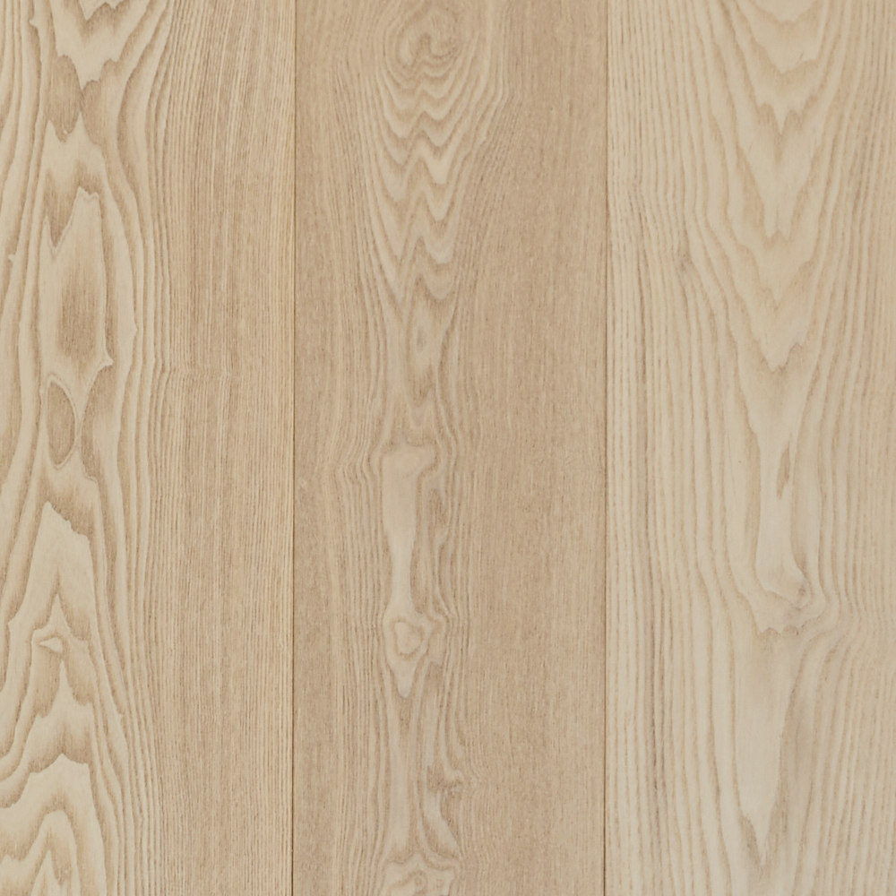
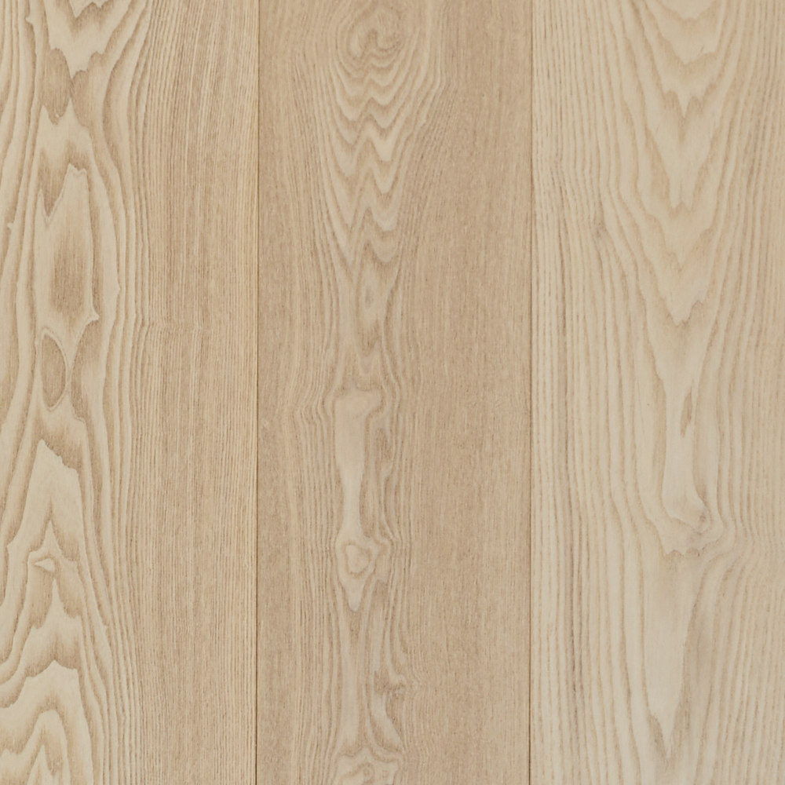
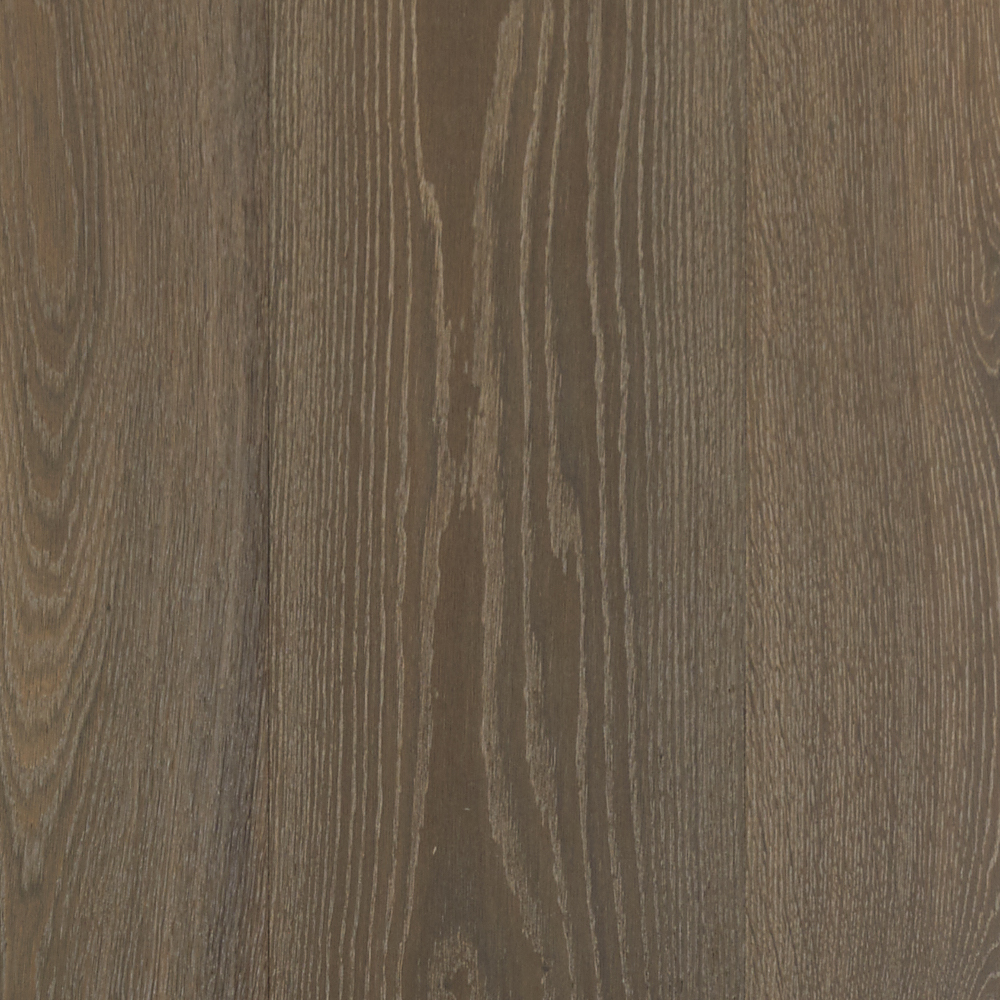
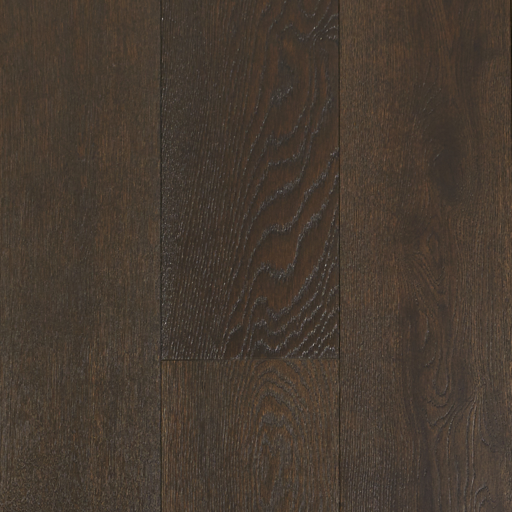
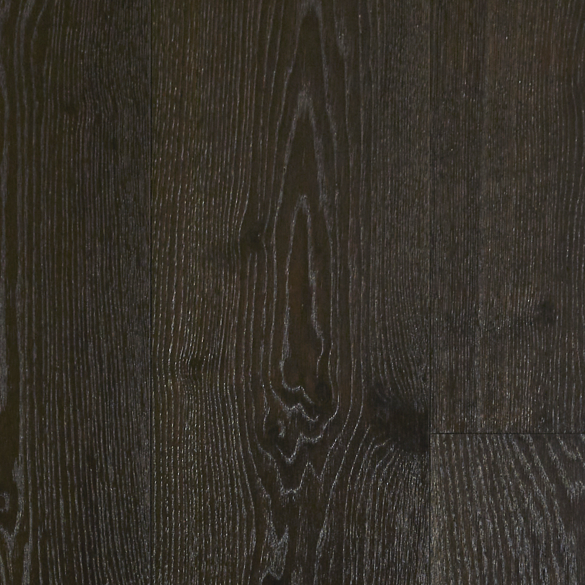
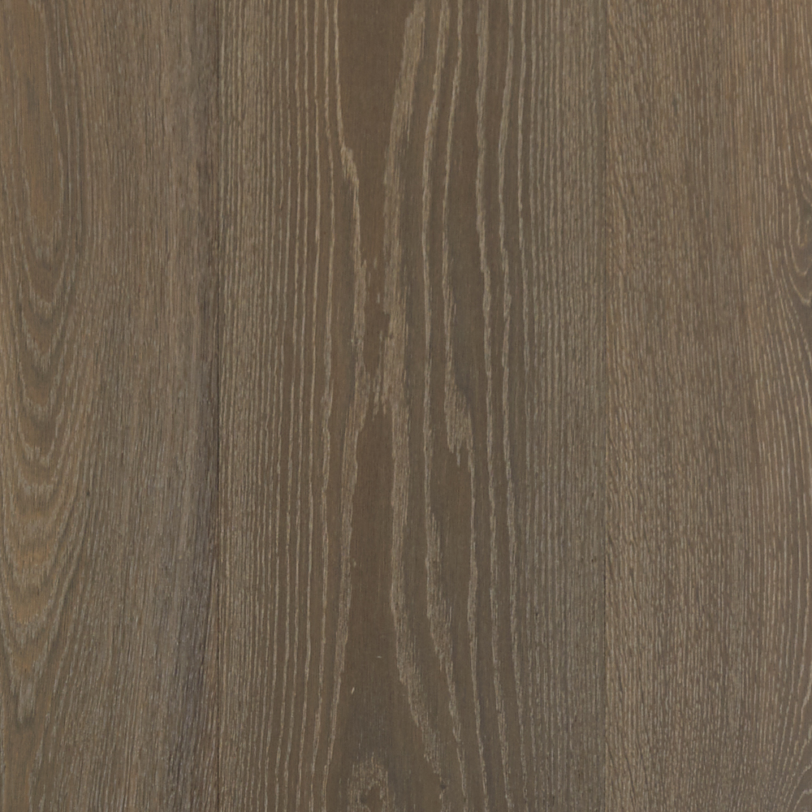
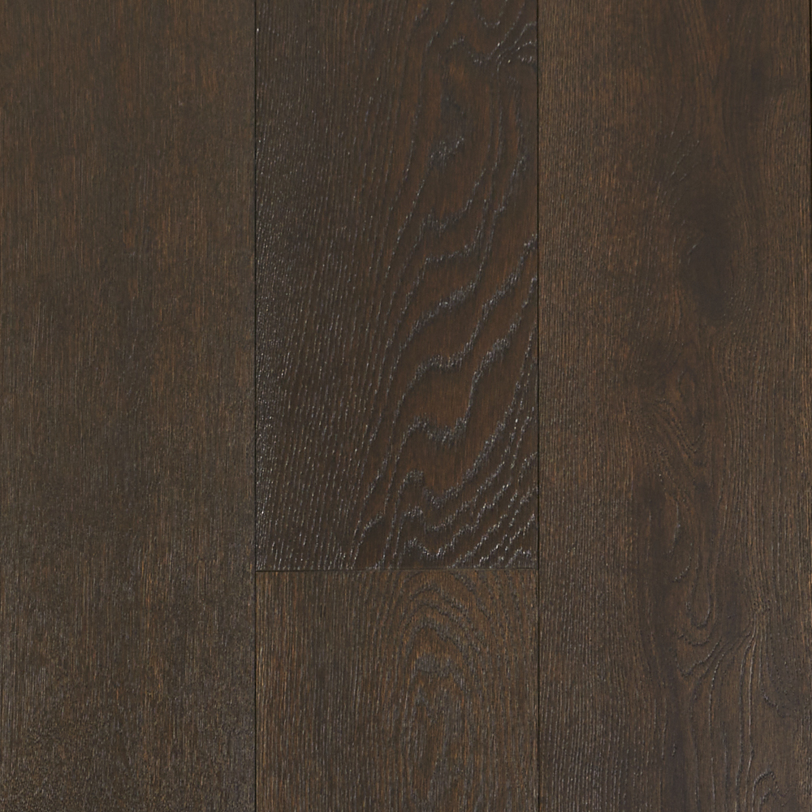
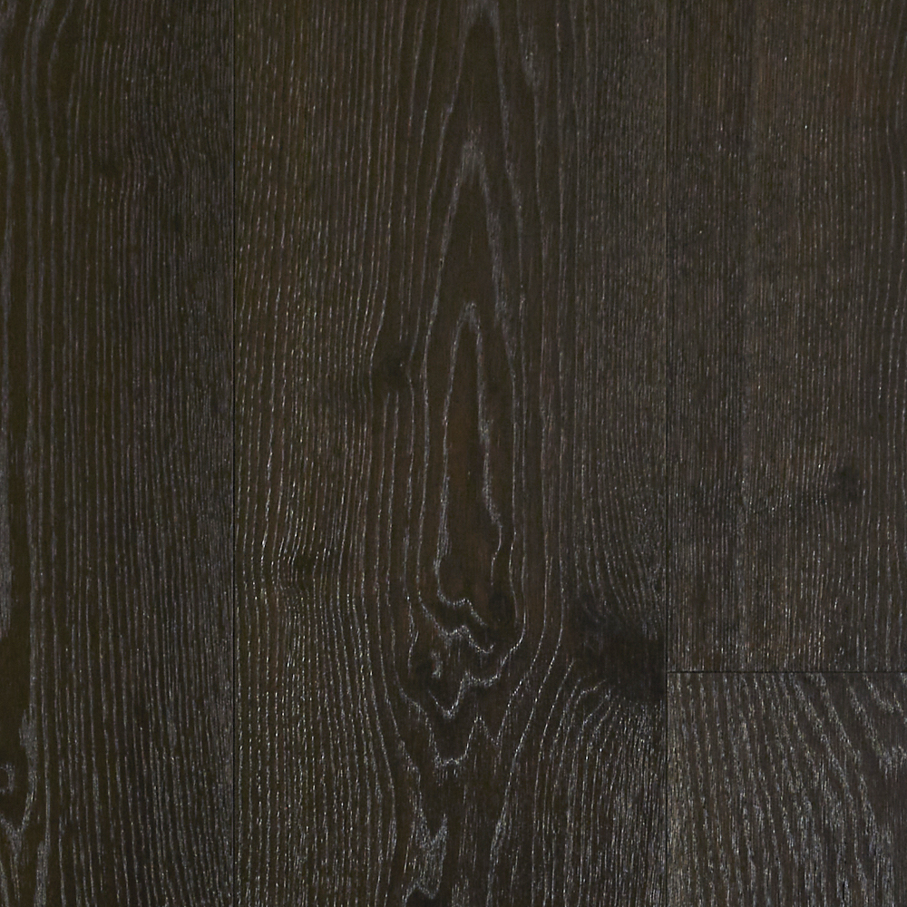

 






Timber Flooring Installation Guide
Introduction
Timber flooring remains one of the most popular flooring materials in Australia, representing approximately 25% of the flooring market. Engineered timber flooring has become increasingly common due to its stability, durability, and resistance to temperature and moisture fluctuations. However, the quality of the installation process plays a critical role in ensuring the long-term performance and aesthetic appeal of the flooring. This guide will teach you how to install timber flooring yourself, combining best practices for installing engineered timber flooring to prevent common issues and ensure a successful installation.
Pre-Installation Considerations
Product Selection
- Choosing the Right Product: Select the appropriate timber flooring product based on the application, considering factors such as board size, stability, and performance characteristics.
- Assess Grade and Features: Evaluate the product grade, natural features, and potential color variations to match the desired aesthetic and quality.
- Installation Method: Consider the installation method (floating or direct stick) and choose appropriate profiles, such as click-and-lock or tongue and groove systems.
Material Delivery & Storage
- Store timber flooring in dry conditions, elevated at least 100mm off the ground.
- Keep the timber in unopened packs until ready to install.
- Acclimatization: If necessary, allow the timber to acclimatize by storing it in the installation environment for a period before installation.
- Environmental Conditions: Maintain a stable indoor environment with temperatures around 20°C and relative humidity between 40% and 60%.
- Handle Engineered Timber Flooring with care.
Subfloor Preparation
- The subfloor must be flat, clean, and dry. It should not exceed 3mm deviation beneath a 3m straight edge in any direction.
- For concrete subfloors, ensure they are free of contaminants like wax, grease, or paint. If uneven, use levelling compounds, grinding, or other means to achieve a flat surface. Test for moisture using a concrete moisture meter (should not exceed 6%) and an in-slab relative humidity test (should not exceed 80%).
- For timber subfloors, ensure they are stable and well-ventilated. Address any drainage issues around the site. Ensure subfloors are free of moisture, and the average in-service moisture content should not exceed 11-12%.
- Use moisture vapour retarders compatible with the adhesive if moisture content is higher than recommended.
Installation Methods
Floating Floor Installation
Tools and Materials Needed:
- Underlay with an integral moisture barrier
- PVA adhesive for board joints
- Stringline or chalk line
- Tape measure
- Pencil
- Utility knife
- Saw for cutting boards (circular saw, jigsaw, or miter saw)
- Spacers or wedges
- Hammer and tapping block
- Pull bar
- Cleaning materials
Steps:
- Lay Underlay: Roll out the underlay with the moisture barrier facing the subfloor and tape the joints to create a continuous layer.
- Start Laying Boards: Begin with the groove side facing the starting wall, using spacers to maintain expansion gaps.
- Apply Adhesive: Apply PVA adhesive to all board joints (length and width) to ensure a strong bond and moisture resistance.
- Tighten Joints: Use a tapping block and pull bar to gently tighten the joints as you continue laying rows.
- Cut and Finish: Cut the final row to fit, maintaining expansion gaps as recommended.
Direct Stick (Direct Bond) Installation Over Concrete
Tools and Materials Needed:
- Adhesive and compatible trowel
- Stringline or chalk line
- Saw for cutting boards
- Spacers or wedges
- Cleaning materials
- Moisture meter
- Concrete leveling compound (if needed)
- Tape measure
- Pencil
- Utility knife
- Hammer and tapping block
- Pull bar
Steps:
- Ensure concrete is fully cured, clean, and dry. Moisture content should not exceed 6% when tested with a concrete moisture meter and 80% with an in-slab relative humidity test.
- Apply a compatible moisture vapor barrier if moisture levels are high.
- Set Out Stringline: Establish a string line about 450mm from the starting wall, accounting for necessary expansion gaps.
- Apply Adhesive: Spread the adhesive using the recommended trowel, ensuring 100% coverage of the subfloor.
- Lay the First Row: Start with the groove facing the wall, using longer, straighter boards. Align the boards with the string line.
- Engage Joints: As you lay the boards, engage the end joints first, followed by the side joints with minimal sliding to maintain adhesive integrity.
- Check and Clean: Regularly check for adhesive transfer, joint tightness, and maintain a stagger pattern with a minimum 300mm between end joints. Clean any adhesive from the board surface immediately.
- Finish and Allow Time: Cut the final row to fit, maintaining the expansion gap. Allow 24 hours before subjecting the floor to heavy foot traffic.
Direct Stick (Direct Bond) Installation Over Existing Timber Flooring
Tools and Materials Needed:
- 5-7mm plywood sheeting (if installing in the same direction as existing flooring)
- Nail gun and nails (for securing plywood if used)
- Adhesive (suitable for both plywood and timber flooring)
- Trowel (for adhesive application)
- Chalk line or string line
- Saw (for cutting boards and plywood)
- Sanding machine (for surface preparation)
- Hammer and nails or screws (for securing plywood sheeting)
- Spacers or wedges (for maintaining expansion gaps)
- Cleaning materials (for removing dust and debris after sanding)
Steps:
- Run Perpendicular: Install the new flooring perpendicular to the direction of the existing floor. If installing in the same direction, first install 5-7mm plywood sheeting in a brick pattern.
- Prepare Surface: For polished or stained existing flooring, sand thoroughly to remove all coatings before laying the new floor. Ensure the existing timber floor is sound, dry, and clean.
- Follow steps 3-8 from the concrete installation process above.
- Pay extra attention to the expansion gaps, as both the new and existing timber will expand and contract.
Direct Stick (Direct Bond) Installation Over Particle Board or Sheet Flooring
Tools and Materials Needed:
- Adhesive (suitable for timber flooring)
- Trowel (for adhesive application)
- Sanding machine (if installing over Yellow Tongue)
- Chalk line or string line
- Saw (for cutting boards)
- Spacers or wedges (for maintaining expansion gaps)
- Cleaning materials (for removing dust and debris)
Steps:
- Identify the Type of Particle Board
- Yellow Tongue: This type of particle board has a resin-enriched surface that needs to be sanded before installing the new timber flooring.
- Orange Tongue: This particle board does not have a resin-enriched surface and can be installed over directly without additional sanding.
- Sanding (Yellow Tongue Only):
- Sand the Surface: Use a sanding machine to remove the resin-enriched layer from Yellow Tongue particle board. This step is critical to ensure proper adhesion of the new flooring.
- Clean the Surface: After sanding, clean the surface thoroughly to remove all dust and debris.
- Check for Moisture: Ensure the particle board or sheet flooring is dry (moisture content should not exceed 11-12%).
- Mark the Starting Point: Set out a string line about 450mm from the starting wall, considering the required expansion gaps. This will guide the alignment of the first row of boards.
- Spread the Adhesive: Apply adhesive evenly using a trowel, ensuring 100% coverage of the subfloor surface.
- Lay the First Row: Start laying the first row of boards along the string line with the groove facing the wall. Ensure the boards are securely placed in the adhesive.
- Engage Joints: Engage the end joints first, followed by the side joints, with minimal sliding to ensure the adhesive remains intact.
- Stagger Joints: Maintain a staggered pattern with at least 300mm between the end joints.
- Cut the Final Row: Measure and cut the last row of boards to fit, ensuring the appropriate expansion gap is maintained around the perimeter.
- Clean Up: Clean any adhesive from the board surface immediately during installation. After the entire floor is laid, clean it thoroughly to remove any remaining dust or adhesive residue.
- Allow Time for Curing: Avoid heavy foot traffic on the newly installed flooring for at least 24 hours to allow the adhesive to cure properly.
Maintenance and Care
Initial Care
- Wait at least 24 hours before allowing heavy foot traffic.
- Clean the floor thoroughly using 1SQM-recommended products.
Ongoing Maintenance
- Clean regularly with a soft broom or dry mop.
- Use manufacturer-recommended cleaning products.
- Place mats at entrances to trap dirt and grit.
- Use felt pads under furniture legs to prevent scratching.
Long-term Care
- Maintain stable indoor humidity (40-60%) and temperature.
- Refinish the floor as needed, typically every 7-10 years for high-traffic areas.
Special Considerations
Post-Installation
- Clean the floor thoroughly using 1SQM-recommended products.
- Address any minor imperfections with appropriate repair methods, such as wax repair kits or fillers.
- Install skirting boards or appropriate trims to cover expansion gaps.
- Avoid using painter's tape directly on the floor.
Expansion Gaps
- Direct stick: Minimum 10mm at walls and fixed objects.
- Floating floors: Minimum 10mm around all fixed objects, including joinery.
- Larger gaps may be needed in tropical areas or locations with high humidity.
Internal Expansion Joints
Required when:
- Direct stick: Width > 10m or length > 15m
- Floating floor: Width > 8m or length > 10m
Underfloor Heating
- Maximum board width: 260mm
- Maximum board thickness: 15mm
- Concrete subfloor moisture content: <3%
- Maximum surface temperature: 26°C
- Follow heating system regulations for installation and operation
Regional Variations
In tropical or coastal areas, consider:
- Using larger expansion gaps
- Selecting timber species more resistant to humidity fluctuations
- Installing additional vapor barriers
Troubleshooting Common Issues
Gaps Between Boards
- Cause: Insufficient acclimatization or extreme humidity changes.
- Solution: Ensure proper acclimatization and maintain stable indoor environment.
Cupping or Crowning
- Cause: Moisture imbalance between top and bottom of boards.
- Solution: Identify and address the source of moisture. May require professional assessment.
Squeaking or Creaking
- Cause: Movement between boards or subfloor.
- Solution: For floating floors, ensure proper expansion gaps. For direct stick, check adhesive coverage.
Conclusion
Successful timber flooring installation requires careful preparation, attention to detail, and consideration of various factors including moisture management, expansion requirements, and regional variations. By following this comprehensive guide and engaging qualified professionals, you can ensure a beautiful, durable timber floor that will enhance your space for years to come.
- © One Square Metre. All rights reserved.
Level 16, 1 Collins St, VIC 3000
+61 396 541 810
info@jpcgroup.com